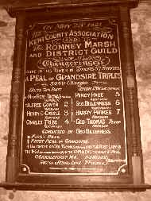

History

(Originally appeared as an article in the KCA Ashford District Newsletter, August 2001)
This Guild has had an interesting history, and it became clear to a number of ringers who ring frequently in the Romney Marsh and surrounding area that the re-establishment of this useful society in 1999 - after lying dormant for about 60 years - could only aid the then poor state of ringing in the aforementioned area. Thus two years on, Members of the Guild see a great improvement in the standard and amount of ringing occurring at towers in the area. At Woodchurch there is a young band in training; at Mersham all but one of the band are members of the Guild, and all 8 bells are rung weekly for practice and Sunday Service. At Appledore, members of the Guild have attended practices weekly to assist those taking their first steps in method ringing. At Burmarsh the Guild organises a monthly practice and also ringing for the monthly Sunday Evensong. At Hothfield too, the local band are all Guild members, and the bells were recently overhauled once again. The bells are rung for practice on 2nd & 4th Thursday, adjourning to Little Chart for a brief practice to keep this tiny six going, followed by the Swan Inn. The Hothfield branch of the Guild attends Divine Service at Hothfield on 1st & 3rd Sunday and ring after the service.
The present criteria for membership is that a candidate for membership must be able to ring 120 changes in any method which does not contain four blows in any one place in the plain course, and therefore one which is not in breach of the original rules of the Central Council. So far this year, the guild has achieved Quarter Peals in Grandsire Triples (taken from Holts Original), Superlative S. Major and Bob Minor.
At the second Committee Meeting of the Guild on Wednesday August 8th 2001 in The Farriers Arms, Mersham the following elections took place: Miss V. Gates Van-Dijke (Mersham) Mistress; Mr C.J. Cooper (Mersham/Ashford/Leeds/Hothfield) Secretary; Mr P.A. Renyard (Mersham/Ashford/Leeds/Hothfield) Treasurer. Committee Members are: Mr I.A. Renyard (Hothfield/Ashford/Mersham/Leeds); Mr D.H. Gower (Cheriton/Hothfield) and Mr J. H. Lane (Ashford).
As from January 2002, particularly bearing in mind that there are now over 30 members on the books, it is intended to hold monthly Guild practices at towers in the area for the practice and teaching of change-ringing.
Turning now to the history of the Guild, the Secretary has only recently begun to look in detail for historical material appertaining to the activities of the RM &DG. He does recall, however, that during the cleaning work which he carried out in the Ringing Room of New Romney tower in the mid 90’s, he found an old RM & DG meeting invitation card in a pile of rubbish which lay in a hollow passage in the belfry. The last time he visited the tower, it had been removed, and it would indeed be interesting to study this card in detail if anyone knows its whereabouts. The only real documentary evidence of the RM &DG, which the Secretary has as yet found, is that contained in reports in the old Ringing World editions at times when the Guild was in a strong position. Any original peal books, name or account books have not as yet been traced. Little history has yet been found of the Guild’s activity over the first ten years or so, and unless anyone can supply ‘concrete evidence’ which disproves these largely conjectural theories, then they will stand until further research confirms or dismisses them.
|  |
| Peal Board at Mersham depicting a joint KCA and RM & DG effort: 5040 Grandsire Triples |
It is assumed then that the recasting of Appledore bells into 8 by Messrs John Warner & Son in October 1900 was done with the express intention of increasing the opportunities for furthering the art in the area. The only other rings of eight in the immediate area were at New Romney where Mr H.S. Humphery was so influential and hardworking in cultivating a band, and at Tenterden, where that famous old ringer Mr C. Tribe ‘pointed the way’. We can therefore assume that the work at Appledore kindled in the minds of at least the two aforementioned Gentlemen, and probably a great many others, the desire for a local Guild which could draw ringers from eight bell towers further afield too – Rye, Brighton, Hawkhurst, Benenden, Mersham, Ashford and Rolvenden. In the event the Guild also drew members from quite some way outside the District; Hythe and Lyminge (The Choirmaster and Organist at that Church, Dr William E. Pitman was a very loyal supporter).
Although the Secretary has not yet found much information about the RM & DG other than the peal boards (the first Guild peal was in 1903 at New Romney), he has just finished researching the year 1913 from The Ringing World. Appended are details of the meetings held, which it is hoped will be of some little interest.
1913
January: Appledore. This was the important Annual Festival of the Guild. 25 members were present, though there was only time for a few touches of Grandsire Triples before the service, which was conducted by the Vicar, Rev A.O. Scutt. At 6 o’clock the members adjourned to the Swan Hotel for a meat tea. At the Annual Meeting held after tea, the Balance sheet showed a balance of £1 15s 3d, and the Hon. Secretary reported that the membership had been steadily increasing – there were now 42 members on the books. In 1912 they had held 12 meetings and an outing, which was the greatest number since the Guild’s formation. The Officers were all re-elected for the forthcoming year: Rev A.O. Scutt (Appledore) President; Mr G. Billeness (Rye) Master; and Gilbert J. Youngs (Rye) Hon. Secretary. Following the Meeting, there was musical entertainment rendered by members and others, and courses of Grandsire Triples were rung on handbells.
February: Stone. This was less well attended. Before the service the ringing comprised 120 Stedman Doubles, 720 Bob Minor, 240 Oxford T.B. Minor and 360 Kent T.B. Minor and other touches. There were also courses of Grandsire Triples on handbells. A service and uneventful meeting followed.
March: Mersham. This meeting was held joint with the KCA Ashford District. Prior to the service the bells were rung to Grandsire and Stedman Triples and Bob Major. Mr Alfred Bowell was in attendance; he was engaged in that month in the rehanging of the old five at Warehorne and recasting the three and four. After the service, meat tea at The Farriers Arms and meetings of both companies, Mr Finn took some interested persons to his workshops where they had the opportunity to view the mini-ring of 10 bells that he had designed.
April: Woodchurch. Unfortunately, this meeting had to be cancelled at the last minute due to the Rector being taken ill.
May: Tenterden. Before the service, Grandsire and Single Oxford Triples were rung. During the service a peal board recording the first single-handed peal of Major on the bells on April 8th 1912 was unveiled. The Leeds Youths accomplished the only other successful peal of Major on the bells; Oxford Treble Bob in 1771, but there was a ‘strapper’ on the Tenor. After the tea, a meeting was held.
June: Woodchurch. There were two meetings held in June to make up for the missed meeting in April. At Woodchurch 120 Grandsire, 720 Bob Minor and other touches were rung prior to the Service. Tea followed, and at the meeting it was resolved that two peals should be attempted, one at New Romney and one at Ashford.
June: Rye. Two weeks later saw the Guild hold a joint meeting with the Sussex C.A. Grandsire and Stedman Triples and Plain Bob and Kent T.B. Major were rung prior to the service, which was followed by tea and the Sussex C.A. meeting.
July: Aldington. This was the Annual Summer Meeting. Grandsire and Stedman Doubles and Plain Bob and Kent T.B. Minor were rung before the service. Mr Charles Slingsby of the local band kindly provided the tea. At the meeting, Mr E.S. Ruck of Mersham (a founder member of KCACR) was elected a member.
August: Annual Outing. This took place in the Thanet area. The Guild rang at St Peter-in-Thanet first; then at St Johns, Margate where they were fortunate enough to be joined by that ingenious Gentleman Mr J.N. Oxborrow of the celebrated Surprise Major band at St Stephen, Westminster. He assisted by calling some touches at St John’s, and later the Guild went to St Laurence in Thanet (a ring of eight then). The meeting then followed.
September: New Romney. This meeting was held joint with the Annual Meeting of the KCA Ashford District. Grandsire and Stedman Triples and Plain Bob and Kent T.B. Major were rung before the service. Tea and meeting of the KCA Ashford District were held. The meeting details were interesting: at that time there were only 4 KCA Ashford District meetings a year, and the Rector or Curate at the Church visited usually chaired the meetings. If the Clergy were unable to assist, then it was usually the District Representative’s job to chair the meeting (in this instance, Mr George B. Anderson of New Romney held this post). Comments were also made at the meeting that the North Kent representatives tended to have things too much their own way. Mr Anderson responded in the affirmative, and said he sometimes wondered if it was worth attending the Committee meetings!
October: Iden. Unfortunately there was a very poor attendance at this meeting, which was hard to account for owing to the wonderful sound of the bells. In any event, 720 Bob Minor and some Grandsire Doubles were rung prior to the service and meeting.
November: Rolvenden. Grandsire Triples was rung prior to the service. Tea and an uneventful meeting followed.
December: Stone. Details of this meeting appeared in the first number of the 1914 Ringing World, which the writer has not yet had chance of viewing. At the Rolvenden meeting in November it was resolved that a Carol Service should be held at Stone.
The members of the RM & DG hope this has given an insight into the present day activities and history of the Guild.

Grave of Charles Slingsby in Aldington Churchyard - he lived to the grand old age of 101
C. J. Cooper
Romney Marsh & District Guild Secretary